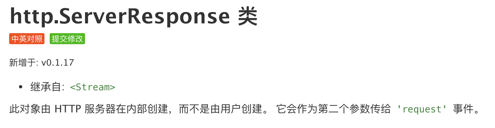

这篇文章继续前面的Koa源码系列，这个系列已经有两篇文章了：
- 第一篇讲解了
Koa的核心架构和源码：手写Koa.js源码 - 第二篇讲解了
@koa/router的架构和源码：手写@koa/router源码
本文会接着讲一个常用的中间件----koa-static，这个中间件是用来搭建静态服务器的。
其实在我之前使用Node.js原生API写一个web服务器已经讲过怎么返回一个静态文件了，代码虽然比较丑，基本流程还是差不多的：
- 通过请求路径取出正确的文件地址
- 通过地址获取对应的文件
- 使用
Node.js的API返回对应的文件，并设置相应的header
koa-static的代码更通用，更优雅，而且对大文件有更好的支持，下面我们来看看他是怎么做的吧。本文还是采用一贯套路，先看一下他的基本用法，然后从基本用法入手去读源码，并手写一个简化版的源码来替换他。
本文可运行代码已经上传GitHub，大家可以拿下来玩玩：https://github.com/dennis-jiang/Front-End-Knowledges/tree/master/Examples/Node.js/KoaStatic
基本用法
koa-static使用很简单，主要代码就一行：
const Koa = require('koa');
const serve = require('koa-static');
const app = new Koa();
// 主要就是这行代码
app.use(serve('public'));
app.listen(3001, () => {
console.log('listening on port 3001');
});
上述代码中的serve就是koa-static，他运行后会返回一个Koa中间件，然后Koa的实例直接引用这个中间件就行了。
serve方法支持两个参数，第一个是静态文件的目录，第二个参数是一些配置项，可以不传。像上面的代码serve('public')就表示public文件夹下面的文件都可以被外部访问。比如我在里面放了一张图片:

跑起来就是这样子：
注意上面这个路径请求的是/test.jpg，前面并没有public，说明koa-static对请求路径进行了判断，发现是文件就映射到服务器的public目录下面，这样可以防止外部使用者探知服务器目录结构。
手写源码
返回的是一个Koa中间件
我们看到koa-static导出的是一个方法serve，这个方法运行后返回的应该是一个Koa中间件，这样Koa才能引用他，所以我们先来写一下这个结构吧：
module.exports = serve; // 导出的是serve方法
// serve接受两个参数
// 第一个参数是路径地址
// 第二个是配置选项
function serve(root, opts) {
// 返回一个方法，这个方法符合koa中间件的定义
return async function serve(ctx, next) {
await next();
}
}
调用koa-send返回文件
现在这个中间件是空的，其实他应该做的是将文件返回，返回文件的功能也被单独抽取出来成了一个库----koa-send，我们后面会看他源码，这里先直接用吧。
function serve(root, opts) {
// 这行代码如果效果就是
// 如果没传opts，opts就是空对象{}
// 同时将它的原型置为null
opts = Object.assign(Object.create(null), opts);
// 将root解析为一个合法路径，并放到opts上去
// 因为koa-send接收的路径是在opts上
opts.root = resolve(root);
// 这个是用来兼容文件夹的，如果请求路径是一个文件夹，默认去取index
// 如果用户没有配置index，默认index就是index.html
if (opts.index !== false) opts.index = opts.index || 'index.html';
// 整个serve方法的返回值是一个koa中间件
// 符合koa中间件的范式： (ctx, next) => {}
return async function serve(ctx, next) {
let done = false; // 这个变量标记文件是否成功返回
// 只有HEAD和GET请求才响应
if (ctx.method === 'HEAD' || ctx.method === 'GET') {
try {
// 调用koa-send发送文件
// 如果发送成功，koa-send会返回路径，赋值给done
// done转换为bool值就是true
done = await send(ctx, ctx.path, opts);
} catch (err) {
// 如果不是404，可能是一些400，500这种非预期的错误，将它抛出去
if (err.status !== 404) {
throw err
}
}
}
// 通过done来检测文件是否发送成功
// 如果没成功，就让后续中间件继续处理他
// 如果成功了，本次请求就到此为止了
if (!done) {
await next()
}
}
}
opt.defer
defer是配置选项opt里面的一个可选参数，他稍微特殊一点，默认为false，如果你传了true，koa-static会让其他中间件先响应，即使其他中间件写在koa-static后面也会让他先响应，自己最后响应。要实现这个，其实就是控制调用next()的时机。在讲Koa源码的文章里面已经讲过了，调用next()其实就是在调用后面的中间件，所以像上面代码那样最后调用next()，就是先执行koa-static然后再执行其他中间件。如果你给defer传了true，其实就是先执行next()，然后再执行koa-static的逻辑，按照这个思路我们来支持下defer吧：
function serve(root, opts) {
opts = Object.assign(Object.create(null), opts);
opts.root = resolve(root);
// 如果defer为false，就用之前的逻辑，最后调用next
if (!opts.defer) {
return async function serve(ctx, next) {
let done = false;
if (ctx.method === 'HEAD' || ctx.method === 'GET') {
try {
done = await send(ctx, ctx.path, opts);
} catch (err) {
if (err.status !== 404) {
throw err
}
}
}
if (!done) {
await next()
}
}
}
// 如果defer为true，先调用next，然后执行自己的逻辑
return async function serve(ctx, next) {
// 先调用next,执行后面的中间件
await next();
if (ctx.method !== 'HEAD' && ctx.method !== 'GET') return
// 如果ctx.body有值了，或者status不是404，说明请求已经被其他中间件处理过了，就直接返回了
if (ctx.body != null || ctx.status !== 404) return // eslint-disable-line
// koa-static自己的逻辑还是一样的，都是调用koa-send
try {
await send(ctx, ctx.path, opts)
} catch (err) {
if (err.status !== 404) {
throw err
}
}
}
}
koa-static源码总共就几十行：https://github.com/koajs/static/blob/master/index.js
koa-send
上面我们看到koa-static其实是包装的koa-send，真正发送文件的操作都是在koa-send里面的。文章最开头说的几件事情koa-static一件也没干，都丢给koa-send了，也就是说他应该把这几件事都干完：
- 通过请求路径取出正确的文件地址
- 通过地址获取对应的文件
- 使用
Node.js的API返回对应的文件，并设置相应的header
由于koa-send代码也不多，我就直接在代码中写注释了，通过前面的使用，我们已经知道他的使用形式是：
send (ctx, path, opts)
他接收三个参数：
ctx：就是koa的那个上下文ctx。path：koa-static传过来的是ctx.path，看过koa源码解析的应该知道，这个值其实就是req.pathopts: 一些配置项，defer前面讲过了，会影响执行顺序，其他还有些缓存控制什么的。
下面直接来写一个send方法吧：
const fs = require('fs')
const fsPromises = fs.promises;
const { stat, access } = fsPromises;
const {
normalize,
basename,
extname,
resolve,
parse,
sep
} = require('path')
const resolvePath = require('resolve-path')
// 导出send方法
module.exports = send;
// send方法的实现
async function send(ctx, path, opts = {}) {
// 先解析配置项
const root = opts.root ? normalize(resolve(opts.root)) : ''; // 这里的root就是我们配置的静态文件目录，比如public
const index = opts.index; // 请求文件夹时，会去读取这个index文件
const maxage = opts.maxage || opts.maxAge || 0; // 就是http缓存控制Cache-Control的那个maxage
const immutable = opts.immutable || false; // 也是Cache-Control缓存控制的
const format = opts.format !== false; // format默认是true，用来支持/directory这种不带/的文件夹请求
const trailingSlash = path[path.length - 1] === '/'; // 看看path结尾是不是/
path = path.substr(parse(path).root.length) // 去掉path开头的/
path = decode(path); // 其实就是decodeURIComponent， decode辅助方法在后面
if (path === -1) return ctx.throw(400, 'failed to decode');
// 如果请求以/结尾，肯定是一个文件夹，将path改为文件夹下面的默认文件
if (index && trailingSlash) path += index;
// resolvePath可以将一个根路径和请求的相对路径合并成一个绝对路径
// 并且防止一些常见的攻击，比如GET /../file.js
// GitHub地址：https://github.com/pillarjs/resolve-path
path = resolvePath(root, path)
// 用fs.stat获取文件的基本信息，顺便检测下文件存在不
let stats;
try {
stats = await stat(path)
// 如果是文件夹，并且format为true，拼上index文件
if (stats.isDirectory()) {
if (format && index) {
path += `/${index}`
stats = await stat(path)
} else {
return
}
}
} catch (err) {
// 错误处理，如果是文件不存在，返回404，否则返回500
const notfound = ['ENOENT', 'ENAMETOOLONG', 'ENOTDIR']
if (notfound.includes(err.code)) {
// createError来自http-errors库，可以快速创建HTTP错误对象
// github地址：https://github.com/jshttp/http-errors
throw createError(404, err)
}
err.status = 500
throw err
}
// 设置Content-Length的header
ctx.set('Content-Length', stats.size)
// 设置缓存控制header
if (!ctx.response.get('Last-Modified')) ctx.set('Last-Modified', stats.mtime.toUTCString())
if (!ctx.response.get('Cache-Control')) {
const directives = [`max-age=${(maxage / 1000 | 0)}`]
if (immutable) {
directives.push('immutable')
}
ctx.set('Cache-Control', directives.join(','))
}
// 设置返回类型和返回内容
if (!ctx.type) ctx.type = extname(path)
ctx.body = fs.createReadStream(path)
return path
}
function decode(path) {
try {
return decodeURIComponent(path)
} catch (err) {
return -1
}
}
上述代码并没有太复杂的逻辑，先拼一个完整的地址，然后使用fs.stat获取文件的基本信息，如果文件不存在，这个API就报错了，直接返回404。如果文件存在，就用fs.stat拿到的信息设置Content-Length和一些缓存控制的header。
koa-send的源码也只有一个文件，百来行代码:https://github.com/koajs/send/blob/master/index.js
ctx.type和ctx.body
上述代码我们看到最后并没有直接返回文件，而只是设置了ctx.type和ctx.body这两个值就结束了，为啥设置了这两个值，文件就自动返回了呢？要知道这个原理，我们要结合Koa源码来看。
之前讲Koa源码的时候我提到过，他扩展了Node原生的res，并且在里面给type属性添加了一个set方法：
set type(type) {
type = getType(type);
if (type) {
this.set('Content-Type', type);
} else {
this.remove('Content-Type');
}
}
这段代码的作用是当你给ctx.type设置值的时候，会自动给Content-Type设置值，getType其实是另一个第三方库cache-content-type，他可以根据你传入的文件类型，返回匹配的MIME type。我刚看koa-static源码时，找了半天也没找到在哪里设置的Content-Type，后面发现是在Koa源码里面。所以设置了ctx.type其实就是设置了Content-Type。
koa扩展的type属性看这里：https://github.com/koajs/koa/blob/master/lib/response.js#L308
之前讲Koa源码的时候我还提到过，当所有中间件都运行完了，最后会运行一个方法respond来返回结果，在那篇文章里面，respond是简化版的，直接用res.end返回了结果：
function respond(ctx) {
const res = ctx.res; // 取出res对象
const body = ctx.body; // 取出body
return res.end(body); // 用res返回body
}
直接用res.end返回结果只能对一些简单的小对象比较合适，比如字符串什么的。对于复杂对象，比如文件，这个就不合适了，因为你如果要用res.write或者res.end返回文件，你需要先把文件整个读入内存，然后作为参数传递，如果文件很大，服务器内存可能就爆了。那要怎么处理呢？回到koa-send源码里面，我们给ctx.body设置的值其实是一个可读流:
ctx.body = fs.createReadStream(path)
这种流怎么返回呢？其实Node.js对于返回流本身就有很好的支持。要返回一个值，需要用到http回调函数里面的res，这个res本身其实也是一个流。大家可以再翻翻Node.js官方文档，这里的res其实是http.ServerResponse类的一个实例，而http.ServerResponse本身又继承自Stream类：

所以res本身就是一个流Stream，那Stream的API就可以用了。ctx.body是使用fs.createReadStream创建的，所以他是一个可读流，可读流有一个很方便的API可以直接让内容流动到可写流：readable.pipe，使用这个API，Node.js会自动将可读流里面的内容推送到可写流，数据流会被自动管理，所以即使可读流更快，目标可写流也不会超负荷，而且即使你文件很大，因为不是一次读入内存，而是流式读入，所以也不会爆。所以我们在Koa的respond里面支持下流式body就行了:
function respond(ctx) {
const res = ctx.res;
const body = ctx.body;
// 如果body是个流，直接用pipe将它绑定到res上
if (body instanceof Stream) return body.pipe(res);
return res.end(body);
}
Koa源码对于流的处理看这里：https://github.com/koajs/koa/blob/master/lib/application.js#L267
总结
本文可运行代码已经上传GitHub，大家可以拿下来玩玩：https://github.com/dennis-jiang/Front-End-Knowledges/tree/master/Examples/Node.js/KoaStatic
现在，我们可以用自己写的koa-static来替换官方的了，运行效果是一样的。最后我们再来回顾下本文的要点：
本文是
Koa常用静态服务中间件koa-static的源码解析。由于是一个
Koa的中间件，所以koa-static的返回值是一个方法，而且需要符合中间件范式:(ctx, next) => {}作为一个静态服务中间件，
koa-static本应该完成以下几件事情：- 通过请求路径取出正确的文件地址
- 通过地址获取对应的文件
- 使用
Node.js的API返回对应的文件，并设置相应的header
但是这几件事情他一件也没干，都扔给
koa-send了，所以他官方文档也说了他只是wrapper for koa-send.作为一个
wrapper他还支持了一个比较特殊的配置项opt.defer，这个配置项可以控制他在所有Koa中间件里面的执行时机，其实就是调用next的时机。如果你给这个参数传了true，他就先调用next，让其他中间件先执行，自己最后执行，反之亦然。有了这个参数，你可以将/test.jpg这种请求先作为普通路由处理，路由没匹配上再尝试静态文件，这在某些场景下很有用。koa-send才是真正处理静态文件，他把前面说的三件事全干了，在拼接文件路径时还使用了resolvePath来防御常见攻击。koa-send取文件时使用了fs模块的API创建了一个可读流，并将它赋值给ctx.body，同时设置了ctx.type。通过
ctx.type和ctx.body返回给请求者并不是koa-send的功能，而是Koa本身的功能。由于http模块提供和的res本身就是一个可写流，所以我们可以通过可读流的pipe函数直接将ctx.body绑定到res上，剩下的工作Node.js会自动帮我们完成。使用流(
Stream)来读写文件有以下几个优点：- 不用一次性将文件读入内存，暂用内存小。
- 如果文件很大，一次性读完整个文件，可能耗时较长。使用流，可以一点一点读文件，读到一点就可以返回给
response，有更快的响应时间。 Node.js可以在可读流和可写流之间使用管道进行数据传输，使用也很方便。
参考资料：
koa-static文档：https://github.com/koajs/static
koa-static源码：https://github.com/koajs/static/blob/master/index.js
koa-send文档：https://github.com/koajs/send
koa-send源码：https://github.com/koajs/send/blob/master/index.js
文章的最后，感谢你花费宝贵的时间阅读本文，如果本文给了你一点点帮助或者启发，请不要吝啬你的赞和GitHub小星星，你的支持是作者持续创作的动力。
作者博文GitHub项目地址： https://github.com/dennis-jiang/Front-End-Knowledges
作者掘金文章汇总：https://juejin.im/post/5e3ffc85518825494e2772fd
我也搞了个公众号[进击的大前端]，不打广告，不写水文，只发高质量原创，欢迎关注~